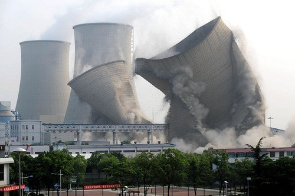

Mon, 20 Sep 2010 20:08:00 · China · PowerPlant · Photographs
China Power Plant Demolition
Here’s a series of cool photographs of a 90 meters Power Plant demolition in Zhejiang province, China. 
See more pix on Shanghaiist here.
Mon, 20 Sep 2010 20:08:00 · China · PowerPlant · Photographs
Here’s a series of cool photographs of a 90 meters Power Plant demolition in Zhejiang province, China. 
See more pix on Shanghaiist here.